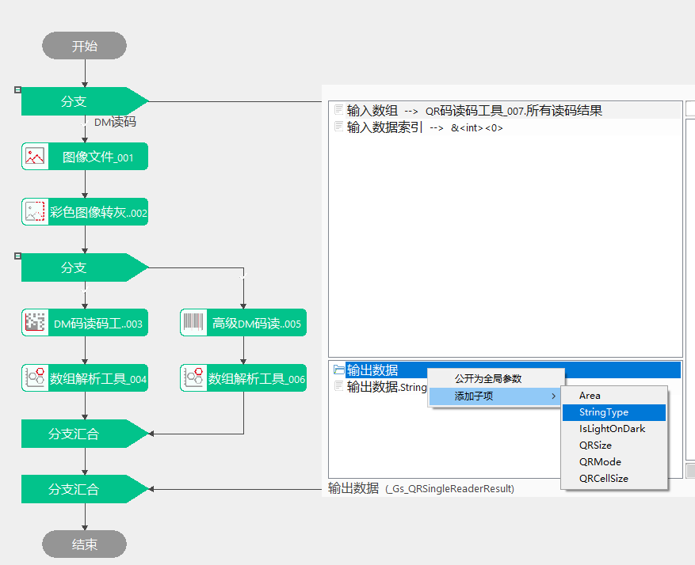

本工具用于对图像中的符合ECC200纠错标准的DM码进行读码。
该工具的输出需要通过数据解析工具（数据类型选择“DMSingleReaderResult”）来获取，数据解析工具结果可以通过参数链添加子项“String”，最终获取解码字符串。

| 参数名称 | 参数描述 | |
|---|---|---|
| 属性窗口 | 读码区域ROI设置 | 用户根据需要选择“整幅图像”或“矩形区域”，“矩形区域”为“读码区域”。 |
| 读码区域 | 读码区域的X、Y为ROI中心点的坐标，SizeX、SizeY表示读码区域的宽和高，Rotation、Skew分别为旋转角和倾斜角。可以通过修改以上值来设置区域大小，也可以在Edit窗口中手动拖拽来设置。 | |
| 待读取DM码个数 | 用户根据实际需要输入要读取的条码个数，取值（0，+∞）只支持整数。例：当图像中有10个DM码时，设置待读取的个数为2，则最终会只读取2个DM码，且返回读码成功。若图像中只有1个DM码，设置待读取的个数为2，则最终只会读取1个DM码，返回读码失败 | |
| 条码极性 | 用户根据输入码的实际亮暗极性进行选择。 | |
| 是否畸变 | 条码模块是否存在投影畸变。 | |
| 区域内对比度有变化 | 读码区域内对比度是否有变化。 | |
| 灰度形态学 | 对DM码进行简易的预处理，包括无、膨胀、腐蚀、开操作、闭操作、二值化、中值滤波，默认不进行预处理。 | |
| 是否启用光照一致性补偿 | 减少光照导致的图像明暗不均。 | |
| 孔洞半宽 | 选取最大孔洞尺寸的一半，取值（0，99）之间的整数。 | |
| 孔洞灰度值 | 指待补偿的孔洞内的灰度，如果条码模块为亮块，则孔洞灰度值应该选取孔洞灰度中最接近条码模块灰度的最大灰度；如果条码模块为暗块，则孔洞灰度值应该选取孔洞灰度值中最接近条码模块灰度的最小灰度，取值[0，255]之间的整数。 | |
| 开启质量评价 | 是否开启质量评价，默认不开启 | |
| 质量评价标准 | 评价标准支持ISOIEC15415和AIMDPM | |
| 条码等级下限 | 评价标准等级下限，当条码等级低于下限工具运行不成功。 | |
| 解码模式 | 可以选择常规模式或增强模式，默认为增强模式。增强模式采取更激进的定位及解码方式，整体识别率更高，但平均耗时及耗时波动表现不如常规模式；常规模式相对增强模式采用的定位策略较保守，复杂场景识别率不如增强模式，简单场景效率表现较好。 | |
| 是否启动TimeOut | 为了防止工具执行时间过长，增加超时处理，选择是时，如果执行时长超出指定时长，工具执行失败并退出。 | |
| TimeOut | 启动TimeOut时可用，单位为ms，取值范围【1，1000000】。在执行计算时可能无法立即中断计算，所以可能存在2~3ms的误差，在设置值时，需要比预期执行时间大，否则可能影响识别率。 | |
| 启用训练 | 当一批DM码图像差异较小时，启用训练会增加工具的记忆性，可以提高读码速度减小耗时；如果码区尺寸相差较大，不建议启用训练，因为可能会影响识别率。 | |
| 完全训练 | 只在启用训练时可用。当码的成像质量一致性较好时，开启完全训练可以同时提升处理效率和识别率；当码的成像质量一致性不好时，关闭完全训练，可以保证识别率的同时，提升效率。 | |
| 支持旋转 | 当码存在旋转角度时，可以开启支持旋转，提升识别率，但如果背景较为复杂，得到的检测线段比较多时，读码会比较耗时；当码没有旋转角度时，关闭支持旋转可以提升读码效率。 | |
| 开启并行运算 | 是否开启并行运算，选择是时，算法将开启OpenMp并行计算方式，可以提升计算速度，但可能出现耗时不稳定的情况，选择否时，算法将关闭OpenMp并行计算。 | |
| 线程数百分比 | 设置并行运算的线程数百分比，有效范围为 (0, 0.75]，对应表示(0%, 75%]百分比范围。 | |
| 图像窗口 | 输入图像 | 待读码的图像。 |
| 读码区域 | 进行读码的矩形区域。 | |
| 数据链 | 输入图像 | 待读码的图像。 |
| 二维线性变换 | 读码区域接收二维线性变换以确保读码区域与DM码的相对固定。 | |
| 高级界面 | 无 |
| 参数名称 | 参数描述 | |
|---|---|---|
| 监视窗口 | 输入图像 | 输入图像的宽度、高度、像素大小。 |
| 评价结果 | 根据质量评级标准，输出ISOIEC15415或AIMDPM评价结果 | |
| 结果个数 | 工具实际读码数目。 | |
| 读码结果 | 显示所有读码结果，包括条码所在多边形区域、解码字符串及类型、条码极性、2D尺寸、Ecc类型、Cell尺寸、条码等级等。 | |
| 条码区域 | 同“读码结果”的条码所在多边形区域参数。 | |
| 解码字符串 | 所有读码结果的第一组数据中的字符串。 | |
| 执行结果 | 工具执行结果。 | |
| 执行时间 | 工具执行时间。 | |
| 图像窗口 | 输出图像 | 完成读码的图像。 |
| 条码所在多边形区域 | 条码所在的区域。 | |
| 执行结果 | 工具执行结果。 | |
| 数据链 | 结果个数 | 工具实际读码数目。同监视窗口中的“结果数目”参数。 |
| 读码结果 | 包括条码所在多边形区域、解码字符串及类型、条码极性、2D尺寸、Ecc类型、Cell尺寸、条码等级等。同监视窗口中的“所有读码结果”参数。 | |
| 评价结果 | 根据质量评级标准，输出ISOIEC15415或AIMDPM评价结果 |
参见“\Samples\读码工具.gvp”。